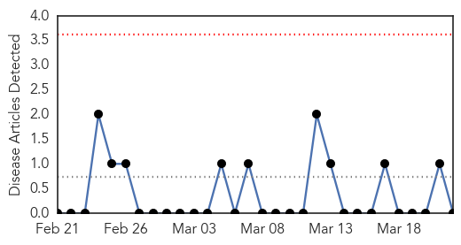
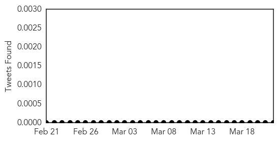

Pertussis
30-Day Web Trend
0 alerts, 0 warnings

30-Day Twitter Trend
0 alerts, 0 warnings

Article Locations

Article Confidences

Top Articles:
-
No articles found for Mar 22, 2014
Top Tweets:
-
No tweets found for Mar 22, 2014
Ebola
30-Day Web Trend
2 alerts, 0 warnings

30-Day Twitter Trend
0 alerts, 0 warnings

Article Locations

Article Confidences

Top Articles:
- 1.000
- Emergency Ebola Intervention Launched in Guinea
- 1.000
- Guinea confirms fever is Ebola, has killed up to 59
- 1.000
- Ebola confirmed in Guinea - africa - world
- 1.000
- Guinea Ebola outbreak believed to be deadly Zaire strain
- 1.000
- Emergency Ebola Intervention Launched in Guinea
- 1.000
- Ebola epidemic confirmed in Guinea, death toll quickly rising
- 1.000
- Ebola alert grips Guinea and Sierra Leone
- 1.000
- Ebola virus outbreak in Guinea kills at least 59 people
- 0.999
- Ebola Virus is the Cause of Deadly Epidemic which Left 60 People Dead
- 0.998
- Guinea haemorrhagic fever may have crossed into Sierra Leone
- 0.998
- Guinea confirms Ebola as source of epidemic
- 0.996
- Ebola fever claims dozens of lives in Guinea
- 0.995
- Guinea confirms that deadly haemorrhagic fever is Ebola
- 0.992
- Guinea confirms deadly mystery epidemic as Ebola
- 0.992
- Guinea confirms deadly mystery epidemic as Ebola
- 0.992
- Guinea confirms deadly mystery epidemic as Ebola
- 0.988
- Deadly West Africa disease ID'd as Ebola
Top Tweets:
-
No tweets found for Mar 22, 2014